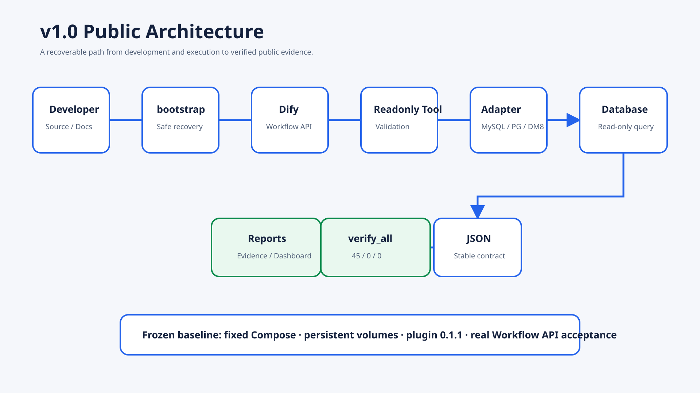

Technical Baseline FROZEN · Environment READY · Lifecycle COMPLETED
One read-only Dify Tool for MySQL, PostgreSQL and DM8, backed by real execution evidence.

Release · Recovery · Architecture · Verification · Screenshots
Release Closure · Public Summary · Statistics
Next: Phase 10 — Adapter Expansion (KingbaseES), version line v1.1.x.